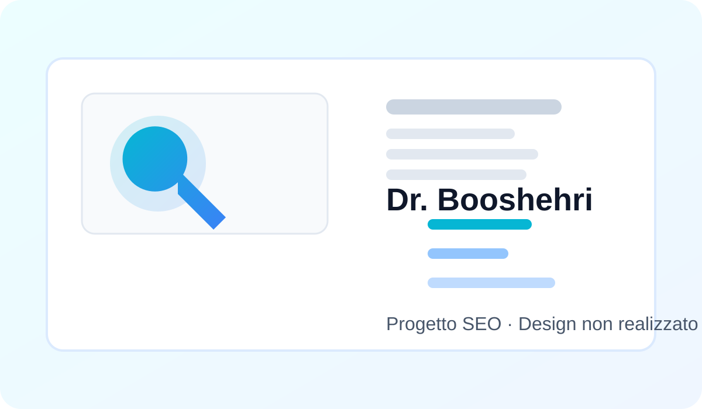

Questo progetto è mostrato come referenza SEO. Il design del sito non è attribuito a me.
Contesto
Il sito era già stato progettato e sviluppato da altri. Il mio incarico riguardava esclusivamente l’ottimizzazione SEO.
La sfida
Migliorare struttura e visibilità organica di un sito informativo sanitario già esistente, senza attribuirmi il lavoro di design.
Il mio contributo
- SEO on-page e tecnica con Rank Math e Google Search Console.
- Ottimizzazione di title, meta description, heading, URL e internal linking.
- Controllo di sitemap, indicizzazione, pagine indicizzate, 404 e struttura.
- Monitoraggio tramite Search Console e manutenzione delle impostazioni SEO.
Risultato / consegna
Un intervento SEO separato dal lavoro di design, dichiarato esplicitamente nel portfolio.
Il case study descrive esclusivamente il lavoro svolto da me nel periodo indicato. Dove il mio contributo era solo SEO, questo è dichiarato esplicitamente.